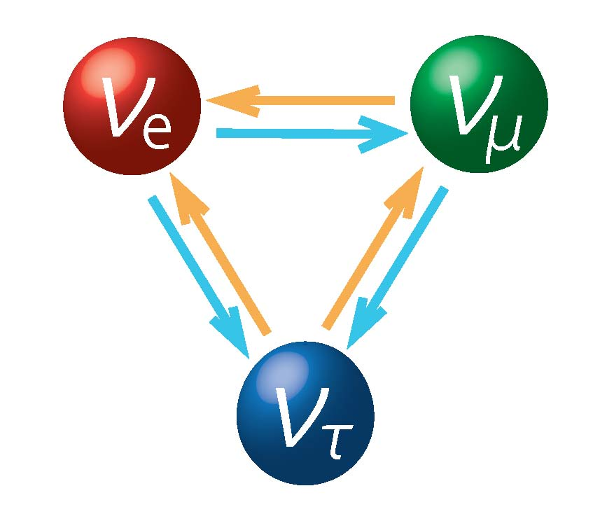

Neutrino and Astroparticle Physics Laboratory
|

Hyper-Kamiokande（NIKKEN SEKKEI）
Welcome
Minamino & Bronner Laboratory @ Yokohama National University (YNU) is exploring the fundamental laws governing the universe through particle physics experiments focusing on neutrino research.

To students considering to go to graduate school
We are recuruting master's and doctoral graduate studetns.
For details, please contact me by e-mail, minamino-akihiro-nx[at]ynu.ac.jp .
Unfortunately, most of the contents in Yokohama National
University entrance examination information are written in Japanease...
Latest News
2025.05.01 Members are updated.

2025.04.01 Christophe Bronner joined us as an assistant professor.